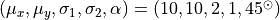
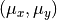
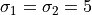

Bivariate Gaussian: Robust Parameter Estimation¶
Figure 3.23.
An example of computing the components of a bivariate Gaussian using a sample with 1000 data values (points), with two levels of contamination. The core of the distribution is a bivariate Gaussian with  The “contaminating” subsample contributes 5% (left) and 15% (right) of points centered on the same , and with . Ellipses show the 1- and 3-sigma contours. The solid lines correspond to the input distribution. The thin dotted lines show the nonrobust estimate, and the dashed lines show the robust estimate of the best-fit distribution parameters (see Section 3.5.3 for details).
{kind=link}
# Author: Jake VanderPlas
# License: BSD
# The figure produced by this code is published in the textbook
# "Statistics, Data Mining, and Machine Learning in Astronomy" (2013)
# For more information, see http://astroML.github.com
# To report a bug or issue, use the following forum:
# https://groups.google.com/forum/#!forum/astroml-general
import numpy as np
from scipy import stats
from matplotlib import pyplot as plt
from matplotlib.patches import Ellipse
from astroML.stats import fit_bivariate_normal
from astroML.stats.random import bivariate_normal
# percent sign needs to be escaped if usetex is activated
import matplotlib
if matplotlib.rcParams.get('text.usetex'):
pct = r'\%'
else:
pct = r'%'
#----------------------------------------------------------------------
# This function adjusts matplotlib settings for a uniform feel in the textbook.
# Note that with usetex=True, fonts are rendered with LaTeX. This may
# result in an error if LaTeX is not installed on your system. In that case,
# you can set usetex to False.
if "setup_text_plots" not in globals():
from astroML.plotting import setup_text_plots
setup_text_plots(fontsize=8, usetex=True)
N = 1000
sigma1 = 2.0
sigma2 = 1.0
mu = [10, 10]
alpha_deg = 45.0
alpha = alpha_deg * np.pi / 180
#------------------------------------------------------------
# Draw N points from a multivariate normal distribution
#
# we use the bivariate_normal function from astroML. A more
# general function for this is numpy.random.multivariate_normal(),
# which requires the user to specify the full covariance matrix.
# bivariate_normal() generates this covariance matrix for the
# given inputs
np.random.seed(0)
X = bivariate_normal(mu, sigma1, sigma2, alpha, N)
#------------------------------------------------------------
# Create the figure showing the fits
fig = plt.figure(figsize=(5, 2.5))
fig.subplots_adjust(left=0.1, right=0.95, wspace=0.05,
bottom=0.15, top=0.95)
# We'll create two figures, with two levels of contamination
for i, f in enumerate([0.05, 0.15]):
ax = fig.add_subplot(1, 2, i + 1)
# add outliers distributed using a bivariate normal.
X[:int(f * N)] = bivariate_normal((10, 10), 2, 4,
45 * np.pi / 180., int(f * N))
x, y = X.T
# compute the non-robust statistics
(mu_nr, sigma1_nr,
sigma2_nr, alpha_nr) = fit_bivariate_normal(x, y, robust=False)
# compute the robust statistics
(mu_r, sigma1_r,
sigma2_r, alpha_r) = fit_bivariate_normal(x, y, robust=True)
# scatter the points
ax.scatter(x, y, s=2, lw=0, c='k', alpha=0.5)
# Draw elipses showing the fits
for Nsig in [1, 3]:
# True fit
E = Ellipse((10, 10), sigma1 * Nsig, sigma2 * Nsig, alpha_deg,
ec='k', fc='none')
ax.add_patch(E)
# Non-robust fit
E = Ellipse(mu_nr, sigma1_nr * Nsig, sigma2_nr * Nsig,
(alpha_nr * 180. / np.pi),
ec='k', fc='none', linestyle='dotted')
ax.add_patch(E)
# Robust fit
E = Ellipse(mu_r, sigma1_r * Nsig, sigma2_r * Nsig,
(alpha_r * 180. / np.pi),
ec='k', fc='none', linestyle='dashed')
ax.add_patch(E)
ax.text(0.04, 0.96, '%i%s outliers' % (f * 100, pct),
ha='left', va='top', transform=ax.transAxes)
ax.set_xlim(5.5, 14.5)
ax.set_ylim(5.5, 14.5)
ax.set_xlabel('$x$')
# This is a bit of a hack:
# We'll draw some lines off the picture to make our legend look better
ax.plot([0], [0], '-k', label='Input')
ax.plot([0], [0], ':k', label='Fit')
ax.plot([0], [0], '--k', label='Robust Fit')
ax.legend(loc='lower right')
if i == 0:
ax.set_ylabel('$y$')
else:
ax.yaxis.set_major_formatter(plt.NullFormatter())
plt.show()